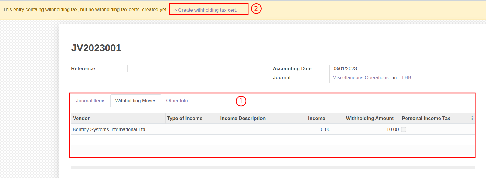

การปิดบัญชี
การปิดบัญชีภาษีหัก ณ ที่จ่าย
มีกระบวนการทำงานดังนี้
- ตรวจสอบรายงานภาษีหัก ณ ที่จ่าย
- ตรวจสอบบัญชีแยกประเภท (General Ledger)
- บันทึกค่าใช้จ่ายและตั้งเจ้าหนี้ เพื่อปิดบัญชีภาษีหัก ณ ที่จ่าย
ตรวจสอบรายงานภาษีหัก ณ ที่จ่าย
Menu :: Invoicing > Reporting > WHT Income Tax Report
การเรียกดูรายงานภาษีหัก ณ ที่จ่ายผ่านเมนู WHT Income Tax Report ใช้สำหรับกรณีที่ต้องการดูข้อมูลในระบบ
-
เมื่อกดที่ WHT Income Tax Report ระบบจะแสดงหน้าต่างให้กรอกข้อมูลดังนี้
- Income Tax Form: เลือกประเภทของภาษีหัก ณ ที่จ่าย
- Show cancelled: ติ๊กเลือกเมื่อต้องการดูรายการที่มีสถานะยกเลิก
- Date Range: เลือกเดือนที่ต้องการตรวจสอบรายงาน
- Date From: วันที่เริ่มต้นการเรียกดูรายงาน
- Date To: วันที่สิ้นสุดการเรียกดูรายงาน

-
หากต้องการตรวจสอบรายงานสามารถเลือกวิธีการดูรายงานได้ดังนี้
- View: เรียกดูรายงานในระบบ
- Export PDF: เรียกดูรายงานภาษีหัก ณ ที่จ่ายตามรูปแบบของกรมสรรพากร
- Export XLSX: ระบบจะออกรายงานเป็น Excel File
- Export TXT: ระบบจะออกรายงานเป็น Text File

-
ระบบจะแสดงรายงานภาษีหัก ณ ที่จ่าย ให้ตรวจสอบข้อมูลดังนี้
- Date From: วันที่เริ่มต้นของการเรียกรายงาน
- Date To: วันที่สิ้นสุดของการเรียกรายงาน
- Income Tax Form: ประเภทของภาษีหัก ณ ที่จ่าย
- Tax ID:เลขประจำตัวผู้เสียภาษีอากร
- Branch ID: สาขา
- Tax Invoice: เลขประจำตัวผู้เสียภาษีอากรผู้ถูกหักภาษี ณ ที่จ่าย
- Cus./Sup.: ชื่อผู้ถูกหักภาษี ณ ที่จ่าย
- Address: ที่อยู่ผู้ถูกหักภาษี ณ ที่จ่าย
- Date: วันที่หัก ณ ที่จ่าย
- Tax Description: ประเภทเงินได้
- Tax : เปอร์เซ็นต์ของการหัก ณ ที่จ่าย
- Base Amount: ยอดก่อนหักภาษี ณ ที่จ่าย
- Tax Amount: ภาษีที่หักและนำส่งไว้
- Ref Doc.: เอกสารอ้างอิง
-
ตรวจสอบยอดรวมของภาษีหัก ณ ที่จ่าย โดยดูที่ยอด Balance มุมล่างของรายงาน เพื่อนำไปบันทึกบัญชีสำหรับนำส่งภาษีให้กับกรมสรรพากร
ตรวจสอบบัญชีแยกประเภท (General Ledger)
Menu: Invoicing > Reporting > General Ledger
เมื่อกดที่เมนู General Ledger ระบบจะแสดงหน้าต่าง
-
ระบบจะแสดงหน้าต่างเงื่อนไขการเรียกรายงานดังนี้
- (1) Date Range: ใส่ช่วงเวลา
- (2) Date From: วันที่เริ่มต้นรายงาน
- (3) Date To: วันที่สิ้นสุดรายงาน
- (4) Target moves:
- All Posted Entry แค่รายการที่ลงบัญชีแล้ว
- All Entries ทุกรายการ
- (5) Activate Centralize: ระบบจะ Default ให้ ไม่ต้องเลือก
- (6) Hide account ending balance at 0: ซ่อนบัญชีที่มียอดเหลือ 0
- (7) Filter: สามารถใส่ค่าที่ต้องการกรองได้

-
หลังจากใส่เงื่อนไขการเรียกดุรายงานเรียบร้อยแล้ว สามารถกดปุ่ม
- (1) View: เพื่อดูรายงานในหน้าระบบ
- (2) Export PDF: เพื่อ Export รายงานเป็น PDF
- (3) Export XLSX: เพื่อ Export รายงานเป็น Excel

-
ตรวจสอบรายละเอียดและยอดรวมในบัญชีแยกประเภท เพื่อนำส่งภาษีหัก ณ ที่จ่ายให้กรมสรรพากร

บันทึกค่าใช้จ่ายและตั้งเจ้าหนี้ เพื่อปิดบัญชีภาษีหัก ณ ที่จ่าย
Menu: Invoicing > Dashboard > Vendor Bills
-
กดปุ่ม Create เพื่อสร้างเอกสาร Vendor Bill สถานะ Draft

-
กรอกข้อมูลที่ Header และตรวจสอบข้อมูลการตั้งเจ้าหนี้

- Vendor: เลือกคู่ค้า กรมสรรพากร
- Bill Reference: กรอกเลขที่เอกสารใบแจ้งหนี้จากคู่ค้าเพื่ออ้างอิง (ถ้ามี)
- Bill Date: วันที่ตามใบแจ้งหนี้
- Accounting Date: วันที่บันทึกบัญชี ระบบเลือกให้เป็นวันที่ปัจจุบัน
- Due Date: กำหนดการชำระเงิน สามารถเลือกเป็นระยะเวลาหรือระบุวันที่ได้ (หากมีการตั้งค่า Payment term ไว้ที่ข้อมูลหลัก Contacts ระบบจะช่วยดึงค่ามากรอกให้อัตโนมัติ)
-
ที่แท็บ Invoice Line กด Add a line และกรอกข้อมูลภาษีหัก ณ ที่จ่าย

- Label: กรอกคำอธิบายรายการ เช่น ปิดบัญชีภาษีหัก ณ ที่จ่ายค้างจ่าย-ภงด.53 เป็นต้น
- Account: เลือกรหัสบัญชี
- Price: ยอดเงินภาษี
-
กดปุ่ม Save เพื่อบันทึกข้อมูลและตรวจทานอีกครั้ง หากต้องการแก้ไขให้กดปุ่ม Edit

-
กดปุ่ม Confirm เพื่อยืนยันการบันทึกค่าใช้จ่ายและตั้งเจ้าหนี้ สถานะเอกสารจะเปลี่ยนจาก Draft เป็น Posted และรอการบันทึกจ่ายชำระเงินต่อไป

การปิดบัญชีภาษีมูลค่าเพิ่ม
ตรวจสอบรายงานภาษีมูลค่าเพิ่ม
เมื่อต้องการปิดบัญชีภาษีมูลค่าเพิ่มประจำเดือน สามารถทำได้ดังนี้
Menu :: Invoicing > Reporting > Thai Tax Report
-
เมื่อกดที่ Thai Tax Report ระบบจะแสดงหน้าต่างให้กรอกข้อมูลดังนี้
- (1) Tax: เลือกประเภทของภาษีมูลค่าเพิ่ม
- (2) Show cancelled: ติ๊กเลือกเมื่อต้องการดูรายการที่มีสถานะยกเลิก
- (3) Period: เลือกเดือนที่ต้องการตรวจสอบรายงาน
- (4) Date From: วันที่เริ่มต้นของการเรียกดูรายงาน
- (5) Date To: วันที่สิ้นสุดของการเรียกดูรายงาน
-
หากต้องการตรวจสอบรายงานสามารถเลือกวิธีการดูรายงานได้ดังนี้
- (1) View: เรียกดูรายงานในระบบ
- (2) Export PDF: เรียกดูรายงานภาษีมูลค่าตามรูปแบบของกรมสรรพากร
- (3) Export XLSX: ระบบจะออกรายงานเป็น Excel File

-
ระบบจะแสดงรายงานภาษีมูลค่าเพิ่มให้ตรวจสอบข้อมูลดังนี้
- (1) Period: วันที่เริ่มต้นของการเรียกรายงาน
- (2) Partner: ชื่อสำนักงาน
- (3) Tax ID: เลขประจำตัวผู้เสียภาษีอากร
- (4) Branch ID: สาขา
- (5) Date: วันที่ในใบกำกับภาษี
- (6) Number: เลขที่ใบกำกับภาษี
- (7) Cus./Sup.: ชื่อคู่ค้าที่อยู่ในใบกำกับภาษี
- (8) Tax ID: เลขประจำตัวผู้เสียภาษีอากรของคู่ค้าในใบกำกับภาษี
- (9) Branch ID: สาขาของคู่ค้าในใบกำกับภาษี
- (10) Base Amount: ยอดก่อนภาษีมูลค่าเพิ่ม
- (11) Tax Amount: ภาษีมูลค่าเพิ่ม
- (12) Doc. Ref: เอกสารอ้างอิง
-
ตรวจสอบยอดรวมของภาษีมูลค่าเพิ่ม โดยดูที่ยอดรวมมุมล่างของรายงาน เพื่อนำไปบันทึกบัญชีสำหรับนำส่งภาษีให้กับกรมสรรพากร

การตรวจสอบบัญชีแยกประเภทของภาษีมูลค่าเพิ่ม
เอกสารนี้สำหรับ :: พนักงานบัญชี (Accounting User)
Menu :: Invoicing > Reporting > General Ledger
-
เมื่อกดที่ General Ledger
-
ระบบจะแสดงหน้าต่างให้กรอกวันที่สำหรับดึงข้อมูลดังนี้
- (1) Date Range: เลือกเดือนที่ต้องการเรียกบัญชีแยกประเภท
- (2) Date From: วันที่เริ่มต้นของการเรียกบัญชีแยกประเภท
- (3) Date To: วันที่สิ้นสุดของการเรียกบัญชีแยกประเภท

-
เสิร์ชชื่อเลขที่บัญชีที่ต้องการเพื่อนำไปปิดบัญชี ที่ Tab Filter accounts
- ตรวจสอบข้อมูลให้ครบถ้วนแล้วสามารถเลือกวิธีการดูรายงาน ได้ 3 วิธีดังนี้
- (1) View: เพื่อดูรายงานในระบบ
- (2) Export PDF: ระบบจะออกรายงานเป็น PDF
- (3) Export XLSX: ระบบจะออกรายงานเป็น Excel

- ตรวจสอบรายละเอียดในบัญชีแยกประเภท เพื่อนำส่งภาษีมูลค่าเพิ่มให้กรมสรรพากร
หากตรวจสอบยอดรวมของภาษีซื้อและภาษีขาย แล้วเกิดผลต่างสามารถทำได้ดังนี้
- กรณีภาษีซื้อมากกว่าภาษีขาย ให้ไปที่เมนู Invoicing > Accounting > Journal Entries เพื่อบันทึกตั้งลูกหนี้กรมสรรพากร
- กรณีภาษีขายมากกว่าภาษีซื้อ ให้ไปที่เมนู Invoicing > Vendors > Bills เพื่อบันทึกนำส่งภาษีมูลค่าเพิ่ม
การปรับปรุงบัญชี
Menu: Invoicing > Accounting > Journal Entries
-
กดปุ่ม Create เพื่อสร้างเอกสารปรับปรุง
-
กรอกข้อมูลการปรับปรุง ส่วน Header
- (1) Reference: กรอกข้อมูลอ้างอิง เช่น เลขที่เอกสารที่ต้องการปรับปรุง เป็นต้น
- (2) Accounting: วันที่ลงบัญชี
- (3) Journal: ประเภทสมุดรายวันที่ต้องการปรับปรุง

-
กด Add a Line ที่ Tab Journal Items เพื่อเพิ่มบรรทัดรายการคู่บัญชีที่ต้องการปรับปรุง
- (1) Account: เลือกบัญชีที่ต้องการปรับปรุง
- (2) Partner: ชื่อคู่ค้า (ถ้ามี)
- (3) Label: คำอธิบายรายการ (ถ้ามี)
- (4) Asset Profile: ใช้ระบุในกรณีที่ต้องการสร้างสินทรัพย์ในทะเบียน (เช่น ปรับปรุงอุปกรณ์ระหว่างทางเป็นอุปกรณ์)
- (5) WHT: ใช้ในกรณีที่ต้องออกหนังสือหัก ณ ที่จ่าย
- (6) Debit: เดบิต
- (7) Credit: เครดิต
- (8) Manual Tax Invoice: ใช้ในกรณีที่ต้องการออกรายงานภาษีมูลค่าเพิ่ม

-
กดปุ่ม Save เพื่อบันทึกข้อมูลและตรวจทาน หากต้องการแก้ไขให้กดปุ่ม Edit
-
กดปุ่ม Post เพื่อยืนยันการปรับปรุงบัญชี สถานะเอกสารจะปลี่ยนเป็น Posted
Note
- เมื่อเลือก WHT ระบบจะแสดง link ให้ไปออกหนังรับรองหัก ณ ที่จ่าย 
- เมื่อติ๊ก Manual Tax Invoice ระบบจะแสดง Tab Tax Invoice สำหรับการออกรายงานภาษีมูลค่าเพิ่ม